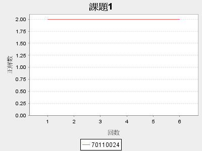

@* record Template File *@
@(title: String, user: String, size: Integer, filesname: Array[String])

<html>
    <head>
        <title>Kamiya System</title>
        <link rel="shortcut icon" type="image/png" href="@routes.Assets.at("images/favicon.png")">
        <link rel="stylesheet" type="text/css" media="screen" href="@routes.Assets.at("stylesheets/record.css")">
    </head>
    <body>
        <header>
            <a href="@routes.Application.index" id="logo">トップページへ戻る</a>
        </header>
        
        <h1>Kamiya System</h1>
    	<p>@user さん履歴ページ</p>
    	@for((x, i) <- filesname.zipWithIndex){
    		<p>＜課題@(i+1)＞</p>
    		<p></p>
    		
    		@x
    	}
    	
    </body>
</html>